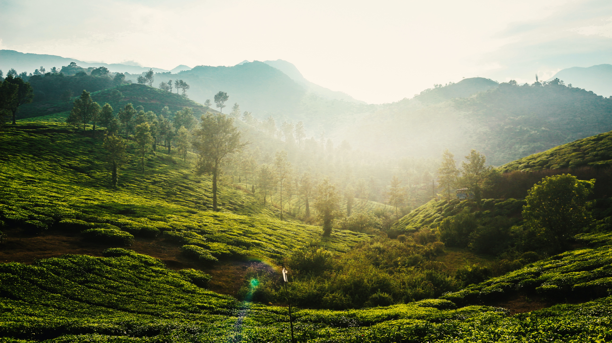
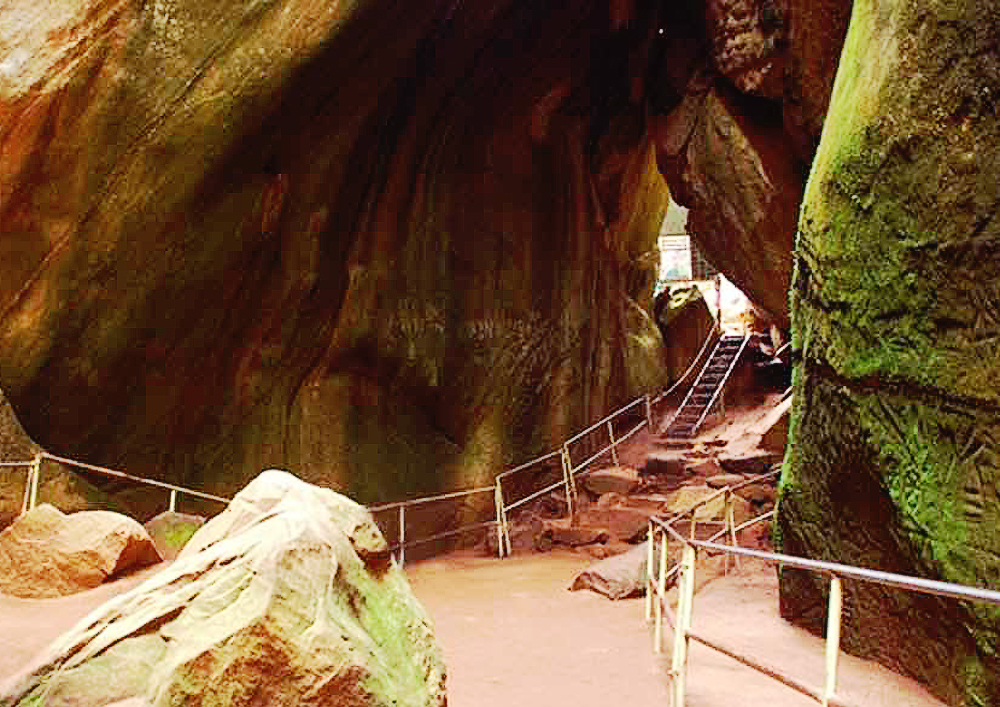

Hill station

Edakkal Caves

Wayanad is a rural district in Kerala state, southwest India. In the east, the Wayanad Wildlife Sanctuary is a lush, forested region with areas of high altitude, home to animals including Asiatic elephants, tigers, leopards and egrets. In the Ambukuthi Hills to the south, Edakkal Caves contain ancient petroglyphs, some dating back to the Neolithic age